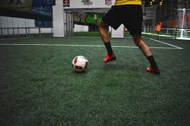

There is a very wide range of activities that you can choose to fill your time with but it can be a struggle to decide which ones would be the best to fill your time with. This becomes a more significant problem with the change in season especially in states such as Montana where each season couldn't be more different than the season before and after it. With such a limited amount of time for each seasons, information overload, and so many great activities that are offered no matter what type of weather is seen in whatever location, it can definitely be overwhelming.
I, personally, am such an expert in this field since I live in Montana and tend to experience very severe seasons and the weather that comes with it. I am also an well-traveled outdoorsman that seizes the moment to the best of my ability which entails me doing a lot of activities in every condition. I am dedicated to help aggravated users like whoever is looking at this now understand that there is hope for you to get off your couch and get active if you are willing to do it even if it is cold.
Now remember, this is an opinion peice so don't judge me or try to fight me for what I think and how I tend to spend my time outside of ridiculous obligations. If you got a problem with that, look within because you don't even know me. This includes my favorite year round athletic activity, which is and will always be soccer.